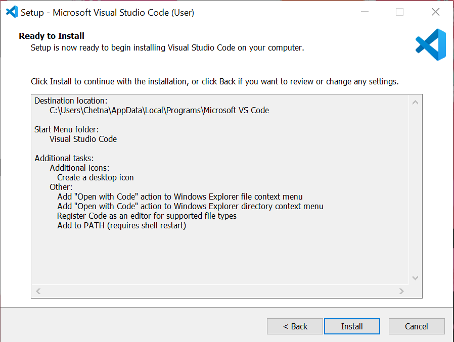
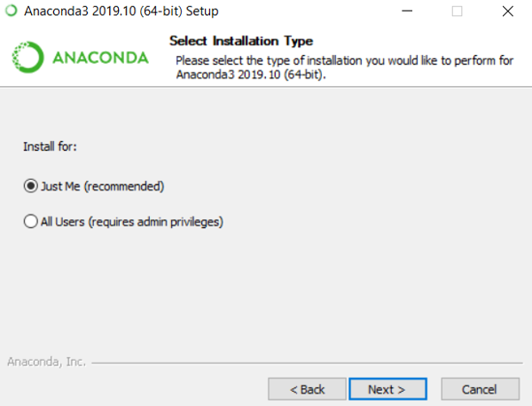
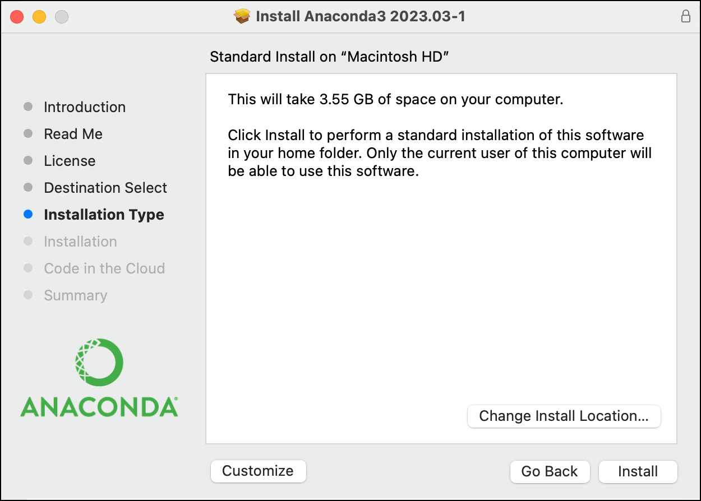
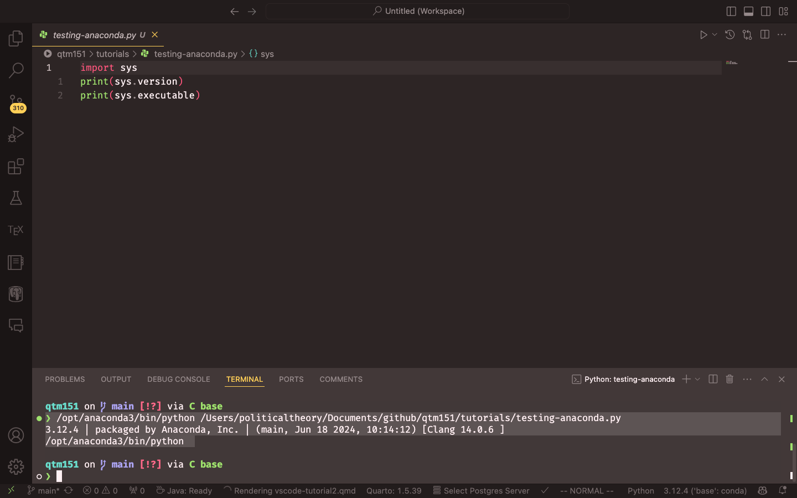

import sys
print(sys.version)
print(sys.executable)Installing VS Code and Connecting it with Anaconda
Introduction
This tutorial will guide students new to computer programming through the process of installing Visual Studio Code (VS Code) and connecting it with Anaconda. We will cover each step in detail to ensure a smooth setup process. If you have any questions or encounter issues during the installation, please feel free to ask for help from me (danilo.freire@emory.edu) or the QTM350 teaching assistants.
Why VS Code?
VS Code is a popular, free code editor developed by Microsoft. According to the 2023 Stack Overflow Developer Survey, VS Code is the most preferred integrated development environment (IDE) among developers. Here are some reasons to choose VS Code for Python development:
Extensive Features and Extensions: VS Code offers several built-in features such as syntax highlighting, IntelliSense, and debugging. It also features hundreds of extensions that can increase its functionality, such as GitHub Copilot.
Cross-Platform Compatibility: VS Code is available for Windows, macOS, and Linux, so you can use it regardless of your operating system.
Active Community and Support: The active community around VS Code means continuous updates and many community-driven extensions now and in the future.
Integration with Git and Other Tools: VS Code seamlessly integrates with version control systems like Git (as Microsoft owns GitHub), making it easier to manage your code repositories and collaborate with others.
With that said, let us start the installation process.
Download and Install VS Code
- Please visit the official Visual Studio Code website: https://code.visualstudio.com/.
- Click on the “Download” button for your operating system (Windows, macOS, or Linux).

For Windows Users
- Run the “VSCodeUserSetup-{version}.exe” file.

- Accept the license agreement and click “Next”.

- Choose the installation location (default is recommended) and click “Next”.

- Select additional tasks if desired (e.g., adding “Open with Code” action) and click “Next”.

- Click “Install” to begin the installation process.

For macOS Users
- Open the downloaded .zip file and drag the VS Code application to the Applications folder.


For Linux Users
- Follow the distribution-specific instructions provided on the VS Code website.
Launch VS Code
- After installation, launch VS Code.
- You should see the welcome screen with options to start a new project or open existing files.

Getting Started
Microsoft has published a series of introductory videos to help you get started with VS Code. You can also read the official documentation for more detailed information.
Installing Anaconda
Anaconda is a distribution of Python that includes many popular packages for data science and scientific computing. It also provides a convenient way to manage different Python environments.
Download Anaconda
- Visit the Anaconda website: https://www.anaconda.com/products/distribution. You can skip the registration if you prefer.

- Click on the “Download” button for your operating system.

For Windows Users
- Choose “Just Me” for the installation type (recommended).

- Select the installation location (default is fine).

- In the “Advanced Options” section, check “Add Anaconda to my PATH environment variable” and “Register Anaconda as my default Python”.

For macOS Users
- Open the downloaded .pkg file and follow the installation instructions. You can install Anaconda for all users.

- Follow the on-screen instructions, accepting the default options.

For Linux Users
- Please follow the distribution-specific instructions provided on the Anaconda website.
Verify Anaconda Installation
- Open a new terminal or command prompt. On VS Code, you can do it by clicking on “Terminal” > “New Terminal” in the top menu.
- Type
conda --versionand press Enter. You should see the Conda version number. - Type
python --versionand press Enter. You should see the Python version installed by Anaconda.

Connecting VS Code with Anaconda
Now that both VS Code and Anaconda are installed, we will connect them to use Anaconda’s Python distribution within VS Code. If they are connected correctly, you should be able to see the Conda and Python versions again in the VS Code output window.
Install the Python and Jupyer Extensions in VS Code:
- Open VS Code and click on the Extensions view icon on the left sidebar (it looks like four squares). Search for “Python” in the search bar.

Find the official Python extension by Microsoft and click “Install”.
Please also install the Jupyter extension for VS Code to work with Jupyter notebooks.

Select the Anaconda Python Interpreter:
- Create a Python file in VS Code. Click on the “New File” button in the top left corner and save it with a
.pyextension.

- Include the following code in the file:
- Save the file again. Here I saved it as
testing-anaconda.py.

- Press
Ctrl+Shift+P(Windows/Linux) orCmd+Shift+P(macOS) to open the Command Palette.

- Type “Python: Select Interpreter” and select it from the list.

- Choose the Anaconda Python interpreter from the list. It should be labelled something like “Python 3.x.x (‘base’) Conda”.
Verify the Connection:
- Please click on the “Run” button at the top right corner of the editor to execute the code in your
.pyfile. Select “Run Current File in Dedicated Terminal”

- The output should show the Anaconda Python version and its location.

Optional: GitHub Copilot
GitHub Copilot is an AI-powered code completion tool that helps you write code faster and with fewer errors. It is available as an extension for VS Code. Detailed instructions are available on the 03-github-copilot-tutorial tutorial in the course repository, but I will provide a brief overview here. Please also refer to https://code.visualstudio.com/docs/copilot/getting-started-chat for further instructions.
To install GitHub Copilot, follow these steps:
First, sign up for a free educational license at https://github.com/education/students. This will give you access to GitHub Copilot and other GitHub features.
On the website, click on “Join GitHub Education” and follow the instructions to verify your student status. You will need to provide proof of enrollment, such as a school email address or a document from your institution. The educational license is valid for two years.
Once you have verified your student status, you can install GitHub Copilot in VS Code. Go to the Extensions view in VS Code (the square icon on the left sidebar) and search for GitHub Copilot. Click on “Install”. VS Code will install two extensions, GitHub Copilot and GitHub Copilot Chat.
After installing the extensions, you will need to sign in to your GitHub account in VS Code. Click on the GitHub icon in the left sidebar and follow the prompts to sign in.
Once you have signed in, you can start using GitHub Copilot. It will provide code suggestions as you type, based on the context of your code. You can accept the suggestions by pressing
TaborEnter. You can also use the Chat tab (the speech bubble icon) to ask questions in natural language, like you do with ChatGPT or other chatbots, and Copilot will provide code snippets in response.
GitHub Copilot can be very helpful for writing code and answering questions, but it also makes mistakes. It is important to review the code suggestions and ensure they are correct before using them in your projects.
Conclusion
You have now successfully installed Visual Studio Code and connected it with Anaconda. Remember to create and activate appropriate Conda environments for different projects to manage dependencies effectively.
For further information and advanced usage, refer to the following resources:
- VS Code Python Tutorial: https://code.visualstudio.com/docs/python/python-tutorial
- Anaconda Documentation: https://docs.anaconda.com/
- VS Code Documentation: https://code.visualstudio.com/docs
Happy coding!